CocoStudioのAnimation Editorを使って簡単なアニメーションを作成し、
Coso2d-x上で読み込んで実行するまでの説明になります。
こんなもん？足りなかったら指摘ください。。。
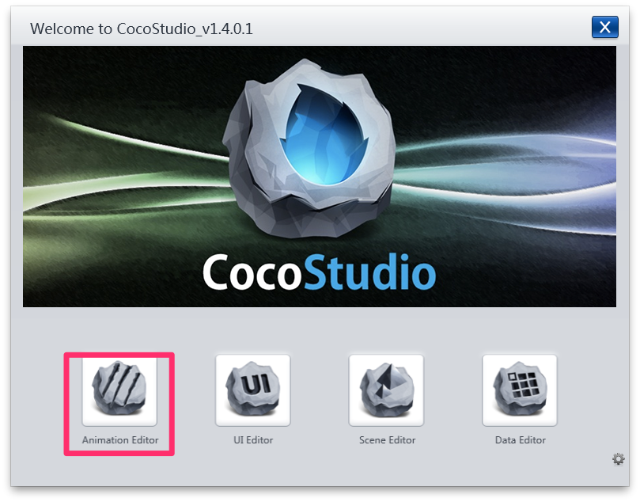
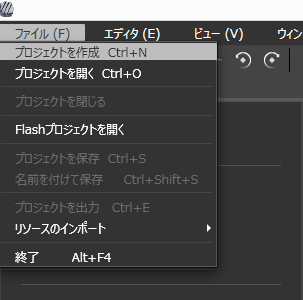
元データはこちら。
この2ファイルを空プロジェクトのResourceへドラッグ&ドロップします。
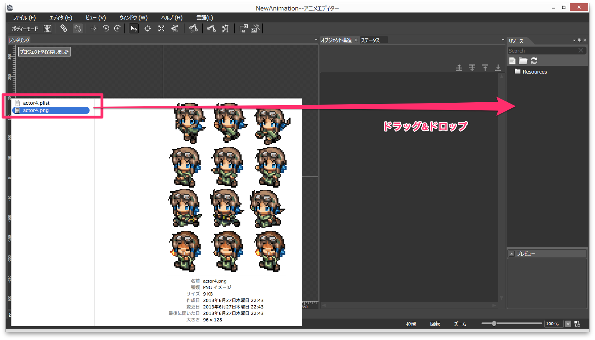
Resourceの中から適当に選んで1つドラック&ドロップします。
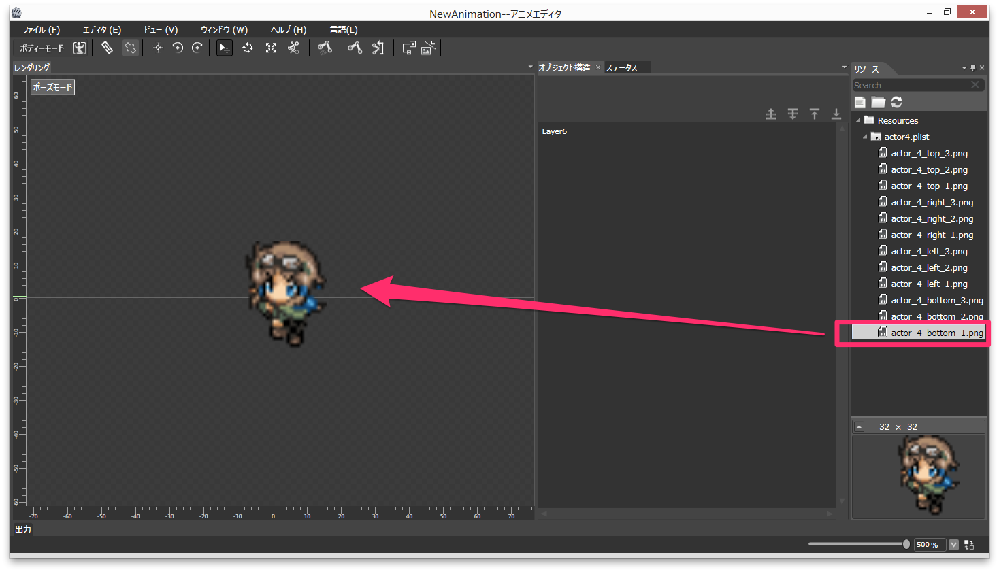
配置したSpriteに対して、フレームの切り替えと移動とカラー変更をタイムラインで制御します。
ここボタンなのか。。。ってくらいわかりにくい感じです。
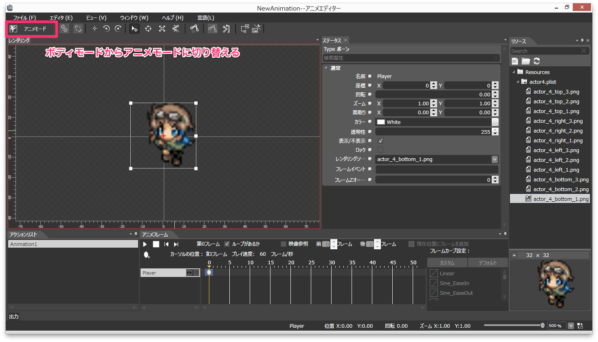
いまのままだと最初に選んだフレームしかないので、レンダリングリソースの欄へドラッグ&ドロップで追加します。
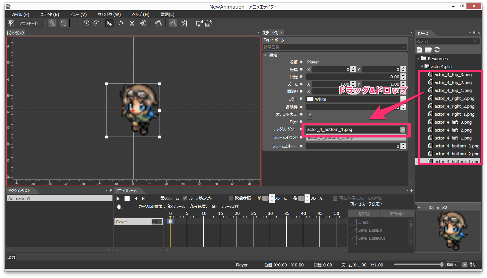
こんな感じに選べるようになります。
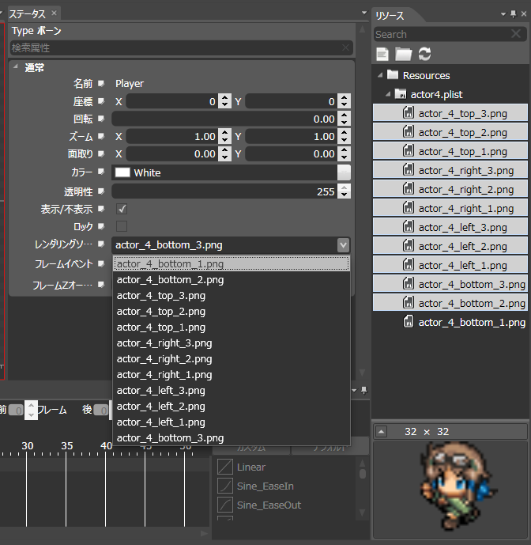
Adobe製品とかのタイムラインみたいな感じで直感的にいじれます。 適当に試してみてください。
キャラだけだと味気ないので、エフェクトも追加してこんな感じにしました。
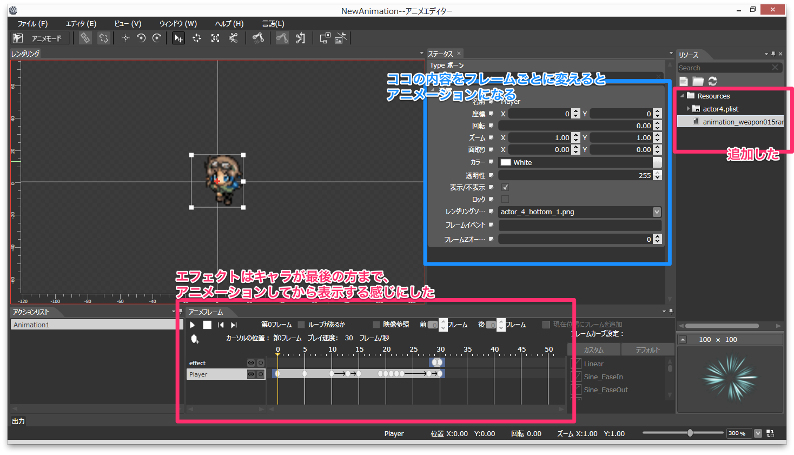
ここでCocoStudioの操作は終わりです。
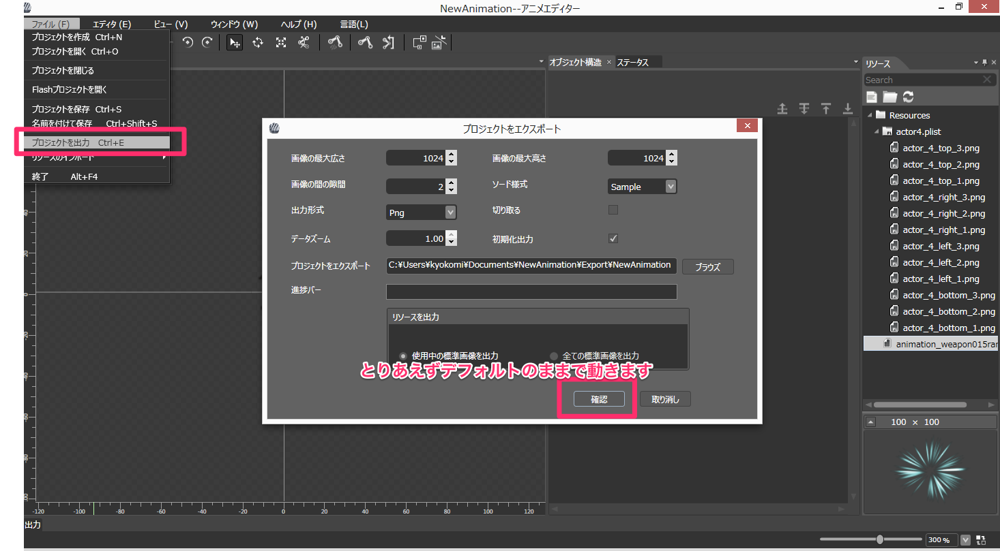
Cocos2d-xのプロジェクト配下にあるResourceディレクトリに、 先ほどCocoStudioから出力したディレクトリを配置します。
NewAnimationってやつです。
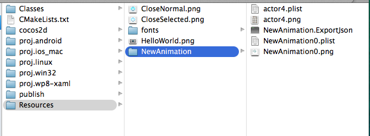
この辺は普段ファイル読み込むのと同じです。
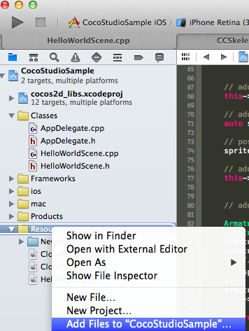
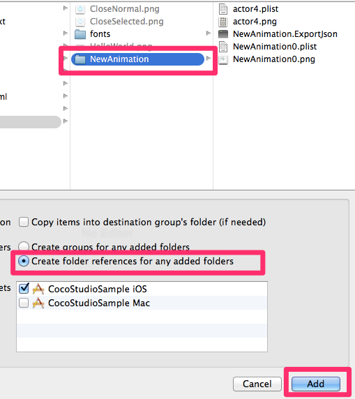
今回作ったアニメーションを呼び出すようにします。
ちなみにアニメーション終了時にCocos2d-xのHelloWorld画像を吹っ飛ばすようにしました。
#include "cocostudio/CocoStudio.h"
using namespace cocostudio;
// 〜省略〜
// on "init" you need to initialize your instance
bool HelloWorld::init()
{
//////////////////////////////
// 1. super init first
if ( !Layer::init() )
{
return false;
}
Size visibleSize = Director::getInstance()->getVisibleSize();
Vec2 origin = Director::getInstance()->getVisibleOrigin();
/////////////////////////////
// 2. add a menu item with "X" image, which is clicked to quit the program
// you may modify it.
// add a "close" icon to exit the progress. it's an autorelease object
auto closeItem = MenuItemImage::create(
"CloseNormal.png",
"CloseSelected.png",
CC_CALLBACK_1(HelloWorld::menuCloseCallback, this));
closeItem->setPosition(Vec2(origin.x + visibleSize.width - closeItem->getContentSize().width/2 ,
origin.y + closeItem->getContentSize().height/2));
// create menu, it's an autorelease object
auto menu = Menu::create(closeItem, NULL);
menu->setPosition(Vec2::ZERO);
this->addChild(menu, 1);
/////////////////////////////
// 3. add your codes below...
// add a label shows "Hello World"
// create and initialize a label
auto label = LabelTTF::create("Hello World", "Arial", 24);
// position the label on the center of the screen
label->setPosition(Vec2(origin.x + visibleSize.width/2,
origin.y + visibleSize.height - label->getContentSize().height));
// add the label as a child to this layer
this->addChild(label, 1);
// add "HelloWorld" splash screen"
auto sprite = Sprite::create("HelloWorld.png");
// position the sprite on the center of the screen
sprite->setPosition(Vec2(visibleSize.width/2 + origin.x - sprite->getContentSize().width/2, visibleSize.height/2 + origin.y));
// add the sprite as a child to this layer
this->addChild(sprite, 0);
// ここから CocoStudio Animationの読み込み
ArmatureDataManager::getInstance()->addArmatureFileInfo("NewAnimation/NewAnimation.ExportJson");
Armature *armature = Armature::create("NewAnimation");
armature->getAnimation()->playWithIndex(0);
armature->getAnimation()->setMovementEventCallFunc([sprite](Armature *armature, MovementEventType type, const std::string & name) {
// Animation終了時(LOOP設定したらループごとに呼ばれる）
sprite->runAction(MoveTo::create(0.2f, Point(-500, sprite->getPositionY())));
});
armature->setPosition(Vec2(visibleSize.width/2 + origin.x, visibleSize.height/2 + origin.y));
this->addChild(armature);
return true;
}
動かしてみるとこんな感じになります。